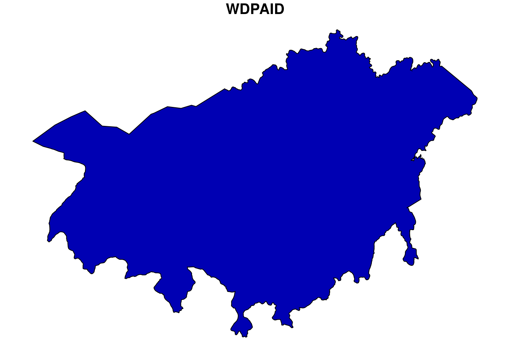
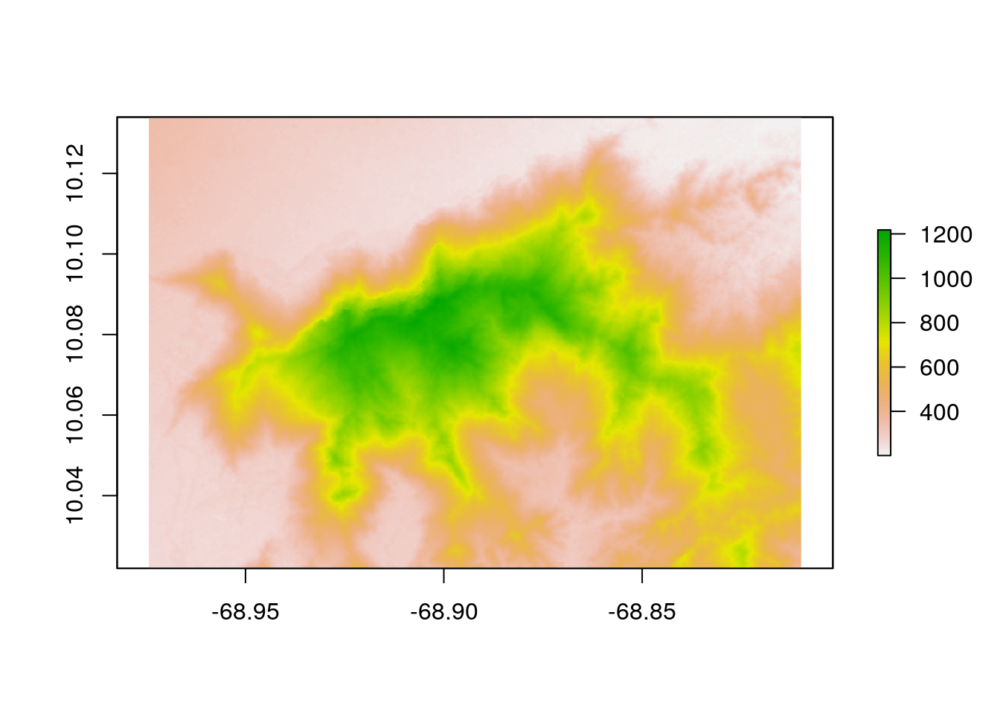
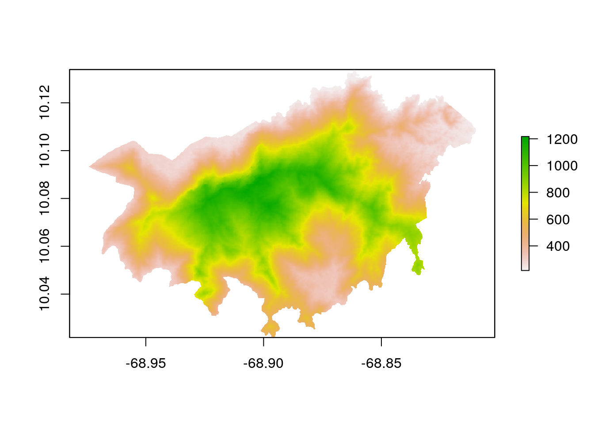

Terrain Ruggedness Index
Johannes Schielein, Om Prakash Bhandari
5/12/2021
Last updated: 2021-05-14
Checks: 6 1
Knit directory: mapme.protectedareas/
This reproducible R Markdown analysis was created with workflowr (version 1.6.2). The Checks tab describes the reproducibility checks that were applied when the results were created. The Past versions tab lists the development history.
The R Markdown is untracked by Git. To know which version of the R Markdown file created these results, you’ll want to first commit it to the Git repo. If you’re still working on the analysis, you can ignore this warning. When you’re finished, you can run wflow_publish to commit the R Markdown file and build the HTML.
Great job! The global environment was empty. Objects defined in the global environment can affect the analysis in your R Markdown file in unknown ways. For reproduciblity it’s best to always run the code in an empty environment.
The command set.seed(20210305) was run prior to running the code in the R Markdown file. Setting a seed ensures that any results that rely on randomness, e.g. subsampling or permutations, are reproducible.
Great job! Recording the operating system, R version, and package versions is critical for reproducibility.
Nice! There were no cached chunks for this analysis, so you can be confident that you successfully produced the results during this run.
Great job! Using relative paths to the files within your workflowr project makes it easier to run your code on other machines.
Great! You are using Git for version control. Tracking code development and connecting the code version to the results is critical for reproducibility.
The results in this page were generated with repository version b40b319. See the Past versions tab to see a history of the changes made to the R Markdown and HTML files.
Note that you need to be careful to ensure that all relevant files for the analysis have been committed to Git prior to generating the results (you can use wflow_publish or wflow_git_commit). workflowr only checks the R Markdown file, but you know if there are other scripts or data files that it depends on. Below is the status of the Git repository when the results were generated:
Ignored files:
Ignored: .Rhistory
Ignored: .Rproj.user/
Untracked files:
Untracked: analysis/terrain_ruggedness_index.rmd
Unstaged changes:
Modified: code/big_data_processing.R
Note that any generated files, e.g. HTML, png, CSS, etc., are not included in this status report because it is ok for generated content to have uncommitted changes.
There are no past versions. Publish this analysis with wflow_publish() to start tracking its development.
# load required libraries
library("raster")
library("elevatr")
library("wdpar")
library("rgdal")
library("tidyverse")
starttime<-Sys.time() # mark the start time of this routine to calculate processing time at the endIntroduction
Terrain Ruggedness Index is a measurement developed by Riley, et al. (1999). The elevation difference between the center pixel and its eight immediate pixels are squared and then averaged and its square root is taken to get the TRI value. The resulting value is then breakdown into seven different possible classes[1]:
- 0 - 80 m :- level surface
- 81-116 m :- nearly level surface
- 117-161 m :- slightly rugged surface
- 162-239 m :- intermediately rugged surface
- 240-497 m :- moderately rugged surface
- 498-958 m :- highly rugged surface
- 959-4367 m:- extremely rugged surface
To obtain this variable, first we need elevation data for our polygons of interest. For this, we are going to use the package elevatr developed by Hollister, et al. We will use the function get_elev_raster from this package which expects two arguments (i) sp-object (polygon of interest) and (ii) zoom level. The zoom level ranges from 0 to 15 in increasing order of spatial resolution, 0 being the least available resolution while 15 being the highest. For this analysis, we would chose zoom level 12 as we get the spatial resolution of approx. 38.2 meters at 0° latitude. After getting the raster, we will compute TRI using terrain function offered by raster package.
Datasource and Metadata Information
- Dataset: - Zoom level 12 Elevation raster - SRTM [elevatr]
- Geographical Coverage: Global
- Spatial resolution: ~38.2 m
- Temporal resolution: Latest Update [2021-01-21]
- Unit: meters
- Data accessed: 14th May, 2021
- Metadata Link
Processing Workflow
The purpose of this analysis is to determine whether the terrain surface of a particular protected area’s polygon is leveled or rugged, if rugged then how much, by analyzing its numerical value. In order to obtain the result, we need to go through several steps of processing as shown in the routine workflow:

Download and Prepare WDPA Polygons
We will try to get the country level polygon data from wdpar package. wdpar is a library to interface to the World Database on Protected Areas (WDPA). The library is used to monitor the performance of existing PAs and determine priority areas for the establishment of new PAs. We will use Venezuela - for other countries of your choice, simply provide the country name or the ISO name e.g. Gy for Guyana, COL for Colombia, BRA for Brazil.
# fetch the raw data from wdpar of country
vn_raw_pa_data <- wdpa_fetch("VEN")Since there are multiple enlisted protected areas in Brazil, we want to compute zonal statistics only for the polygon data of: - Cerro de María Lionza - wdpaid 307
For this, we have to subset the country level polygon data to the PA level.
# subset three wdpa polygons by their wdpa ids
ven<-
vn_raw_pa_data%>%
filter(WDPAID %in% 307)
# plot the sample polygon
plot(ven[1])
Download and Prepare elevation raster data
Since we already prepared polygon data for our analysis, now will download and prepare elevation raster for selected polygons using elevatr.
# get elevation raster from package `elevatr` at zoom level 12
elevation <- get_elev_raster(ven,
z = 12)Merging DEMsReprojecting DEM to original projectionNote: Elevation units are in meters.
Note: The coordinate reference system is:
+proj=longlat +datum=WGS84 +no_defs +ellps=WGS84 +towgs84=0,0,0Crop the elevation raster
As we completed raster and vector data preparation, the next step would be to clip the raster layer by the selected PA polygon both by its extent and mask layer.
# crop raster using polygon extent
elevation_cropped <- crop(elevation, ven)
# plot the data - shows the raster after getting cropped by the extent of polygon
plot(elevation_cropped)
# crop raster using polygon mask
elevation_masked <- mask(elevation_cropped, ven)
# plot the data - shows the raster after getting cropped by the polygon mask
plot(elevation_masked)
Compute Terrain Ruggedness Index (TRI)
The function terrain from raster package provides functionality to compute terrain ruggedness index for the desired polygons. We use neighbors=8, to specify the function to take immediate 8 neighbor cells for TRI computation.
# compute terrain ruggedness index
tri <- terrain(elevation_masked,
opt="TRI",
neighbors=8,
unit="degrees")Rasterize the polygon layer
To compute the zonal statistics, it is necessary to rasterize the polygon layer. Doing so, values are transferred from the spatial objects to raster cells. We need to pass the extent layer and the mask layer to the rasterize function.
# rasterize
r <- rasterize(ven, elevation_masked, ven$WDPAID)Compute Zonal Statistics
A zonal statistics operation is one that calculates statistics on cell values of a raster (a value raster) within the zones defined by another dataset [ArcGIS definition]. For TRI, we will compute mean, median and standard deviation while for the elevation values, we will only compute its average value within the polygon.
# zonal stats - mean value of TRI
tri_mean <- zonal(tri, r, 'mean', na.rm=T)
# zonal stats - median value of TRI
tri_median <- zonal(tri, r, 'median', na.rm=T)
# zonal stats - standard deviation of TRI values
tri_sd <- zonal(tri, r, 'sd', na.rm=T)
# zonal stats - mean elevation values
elevation_mean <- zonal(elevation_masked, r, 'mean', na.rm=T)Finally, we can create the data frame.
# create dataframe to receive results
df.tri <- data.frame(WDPA_PID=ven$WDPAID,
terrain_ruggedness_index_mean=tri_mean[ ,2],
terrain_ruggedness_index_median=tri_median[ ,2],
terrain_ruggedness_index_standard_deviation=tri_sd[ ,2],
elevation_mean=elevation_mean[ ,2])
# change the data frame to long table format
df.tri_long <- pivot_longer(df.tri,
cols=c(terrain_ruggedness_index_mean,
terrain_ruggedness_index_median,
terrain_ruggedness_index_standard_deviation,
elevation_mean))The results looking like this:
# view the result
df.tri_long# A tibble: 4 x 3
WDPA_PID name value
<dbl> <chr> <dbl>
1 307 terrain_ruggedness_index_mean 5.06
2 307 terrain_ruggedness_index_median 4.71
3 307 terrain_ruggedness_index_standard_deviation 2.69
4 307 elevation_mean 628. From the above result, we can say that the polygon which we used for our analysis have leveled surface since the mean value of TRI is around 5 meters and having average elevation of approx. 628 meters. In similar way, we can compute elevation for the desired region of interest and see whether it has leveled or rugged surface.
In the end we are going to have a look how long the rendering of this file took so that people get an idea about the processing speed of this routine.
stoptime<-Sys.time()
print(starttime-stoptime)Time difference of -15.96215 secsReferences
[1] Riley, S. J., DeGloria, S. D., & Elliot, R. (1999). Index that quantifies topographic heterogeneity. intermountain Journal of sciences, 5(1-4), 23-27.
sessionInfo()R version 4.0.0 (2020-04-24)
Platform: x86_64-pc-linux-gnu (64-bit)
Running under: Ubuntu 18.04.5 LTS
Matrix products: default
BLAS/LAPACK: /usr/lib/x86_64-linux-gnu/libopenblasp-r0.2.20.so
locale:
[1] LC_CTYPE=en_US.UTF-8 LC_NUMERIC=C
[3] LC_TIME=en_US.UTF-8 LC_COLLATE=en_US.UTF-8
[5] LC_MONETARY=en_US.UTF-8 LC_MESSAGES=C
[7] LC_PAPER=en_US.UTF-8 LC_NAME=C
[9] LC_ADDRESS=C LC_TELEPHONE=C
[11] LC_MEASUREMENT=en_US.UTF-8 LC_IDENTIFICATION=C
attached base packages:
[1] stats graphics grDevices utils datasets methods base
other attached packages:
[1] forcats_0.5.0 stringr_1.4.0 dplyr_1.0.5 purrr_0.3.4
[5] readr_1.3.1 tidyr_1.1.3 tibble_3.1.1 ggplot2_3.3.1
[9] tidyverse_1.3.0 rgdal_1.5-8 wdpar_1.3.0.1 sf_0.9-3
[13] elevatr_0.2.0 raster_3.1-5 sp_1.4-2
loaded via a namespace (and not attached):
[1] httr_1.4.1 jsonlite_1.7.2 modelr_0.1.8 assertthat_0.2.1
[5] countrycode_1.2.0 blob_1.2.1 cellranger_1.1.0 progress_1.2.2
[9] yaml_2.2.1 pillar_1.6.0 backports_1.2.1 lattice_0.20-41
[13] glue_1.4.2 digest_0.6.27 promises_1.2.0.1 rvest_0.3.5
[17] colorspace_2.0-0 htmltools_0.5.1.1 httpuv_1.6.0 pkgconfig_2.0.3
[21] broom_0.7.6 haven_2.3.1 scales_1.1.1 later_1.2.0
[25] git2r_0.27.1 generics_0.1.0 ellipsis_0.3.2 withr_2.4.2
[29] cli_2.5.0 magrittr_2.0.1 crayon_1.4.1 readxl_1.3.1
[33] evaluate_0.14 fs_1.5.0 fansi_0.4.2 xml2_1.3.2
[37] class_7.3-16 prettyunits_1.1.1 tools_4.0.0 hms_0.5.3
[41] lifecycle_1.0.0 munsell_0.5.0 reprex_0.3.0 compiler_4.0.0
[45] e1071_1.7-3 rlang_0.4.11 classInt_0.4-3 units_0.6-6
[49] grid_4.0.0 rstudioapi_0.13 rappdirs_0.3.3 rmarkdown_2.2
[53] gtable_0.3.0 codetools_0.2-16 curl_4.3 DBI_1.1.0
[57] R6_2.5.0 lubridate_1.7.8 knitr_1.28 utf8_1.2.1
[61] workflowr_1.6.2 rprojroot_1.3-2 KernSmooth_2.23-16 stringi_1.5.3
[65] Rcpp_1.0.6 vctrs_0.3.8 dbplyr_1.4.4 tidyselect_1.1.1
[69] xfun_0.22